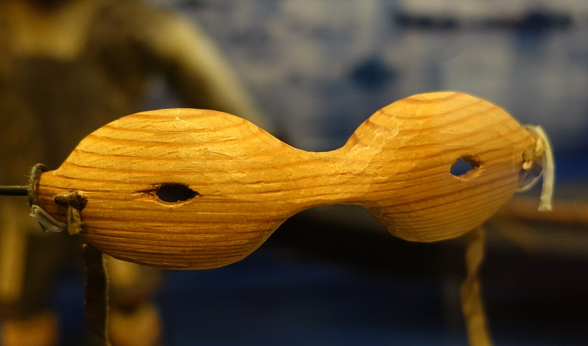

Years documented
Inuvialuit Living History records wood-and-baleen idjgaak from the Nelson River archaeological site, associated with Early Inuit ancestors roughly 800 years ago.

THE LINEAGE OF THE FORM
Across the Arctic, Inuit and other northern Indigenous peoples developed precisely shaped snow goggles to meet a serious environmental danger. Their solution—shielding the eyes while admitting light through narrow openings—is among the earliest forms of protective eyewear.
01 / THE INVENTION
Sunlight reflected by snow and ice can burn the cornea, causing photokeratitis, commonly called snow blindness. Inuit makers answered that danger with close-fitting goggles carved for the wearer. Known in different Inuktitut dialects as iggaak or ilgaak, they were made for travel and hunting during the brilliant Arctic spring and summer. The words and forms vary by region; the shared principle is control of incoming light.
Inuvialuit Living History records wood-and-baleen idjgaak from the Nelson River archaeological site, associated with Early Inuit ancestors roughly 800 years ago.
The openings reduce direct and reflected light reaching the eyes, helping protect against snow blindness without glass lenses.
Traditional goggles were carved to fit closely around an individual wearer’s face, limiting stray light at the edges.

02 / HOW THE FORM WORKS
The narrow horizontal openings block much of the intense glare coming from above and below. Museum sources also record that the restricted aperture can sharpen and focus vision, while a wraparound fit keeps additional light from leaking around the sides.
Some makers darkened the interior with soot to absorb reflections. The field of view became narrower, but the landscape could appear clearer—a purposeful exchange between peripheral vision and protection.
03 / MATERIAL INTELLIGENCE
Carved and hollowed to fit the contours of the face.
Dense caribou antler provided a strong, workable body.
Local animal bone could be shaped into durable eye protection.
Walrus ivory appears in surviving historical examples.
Flexible whale baleen was also shaped into protective goggles.
04 / FROM IGGAAK TO IGAAKS
Make: described Paul Celmer’s IGAAKS in 2010 as “a modern version of traditional Inuit snow goggles.” The name echoes iggaak, while the contemporary work translates the continuous shield and narrow field of sight into wearable metalwork made in Durham, North Carolina.
Protective equipment developed by Inuit and other Arctic Indigenous peoples; individually carved from locally available natural materials; designed to prevent snow blindness in a reflective environment.
Fashion eyewear fabricated from a solid piece of 20-gauge stainless steel or brass; shaped by hand and offered in raw, oxidized, powder-coated, or heat-cured finishes.
A note on attribution: IGAAKS did not invent the slotted-goggle principle. That knowledge belongs to Indigenous Arctic design traditions. The contemporary object is presented here as an adaptation that should be understood alongside—and with credit to—the people and conditions from which the foundational idea emerged.
05 / READ FURTHER